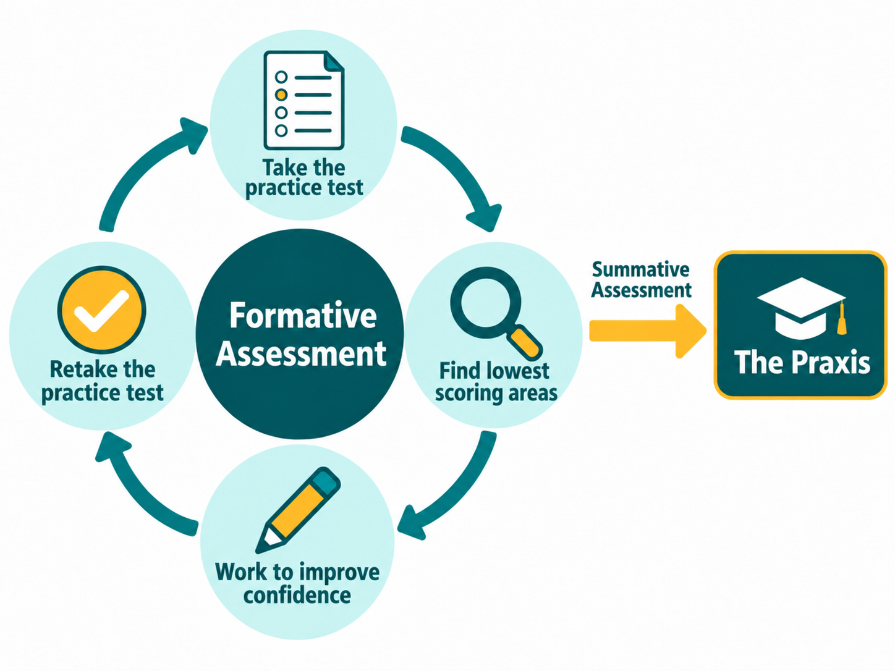

After I completed graduate school, I had to take the Praxis to become a certified teacher. The Praxis was a summative assessment of all that I learned throughout my coursework, in addition to elementary content like math and social studies. Ismail et al. (2022) explain that “formative assessment allows for feedback which improves learning while summative assessment measures learning” (p. 2).
When I was a student, I never felt confident in math. I started preparing a few months before the Praxis by taking an initial practice test. My score on the math section was the lowest. I went back to the problems I missed and watched videos on Khan Academy. The two sections I worked the most on were word problems with fractions and measurement conversions with a table. I took a few more practice tests, focusing only on the math section. The practice tests were formative assessment, which helped me to identify and practice weak spots. Whenever something felt hard, I did more problems until it felt easier.
The Formative Assessment Cycle Leading to the Praxis

On my Praxis testing day, I felt the same test anxiety that had been there as a kid. As a kid, I felt nervous because I usually didn’t know the answer or because I hadn’t really studied. As an adult, I had studied, but my nerves went back to feeling not good enough or smart enough in math. Taking the Praxis, I used test-taking strategies to help me feel more in control. I reread questions, eliminated answers that did not make sense and marked more challenging problems to come back to at the end. When I finished, I remember feeling disappointed and thinking I probably had not passed. Later that day, I found out I had passed, and the math section was my highest-scoring section. I spent years thinking I was bad at math, but seeing that score changed how I viewed myself and helped me to leave an old version of myself behind.
The practice tests made that possible. Gezer et al. (2021) found that formative math scores were connected to summative scores. I emphasize the importance of knowing multiplication and division facts in 4th grade because the most challenging unit all year, fractions, depends on that knowledge. When my students tell me math is hard, I share what worked for me: find what feels hard and keep practicing until you feel more confident.
Join the conversation